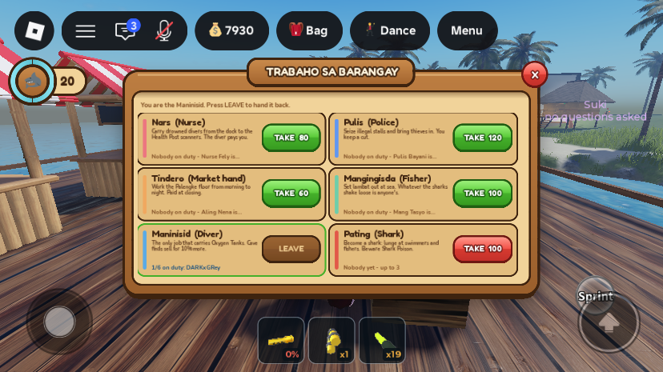
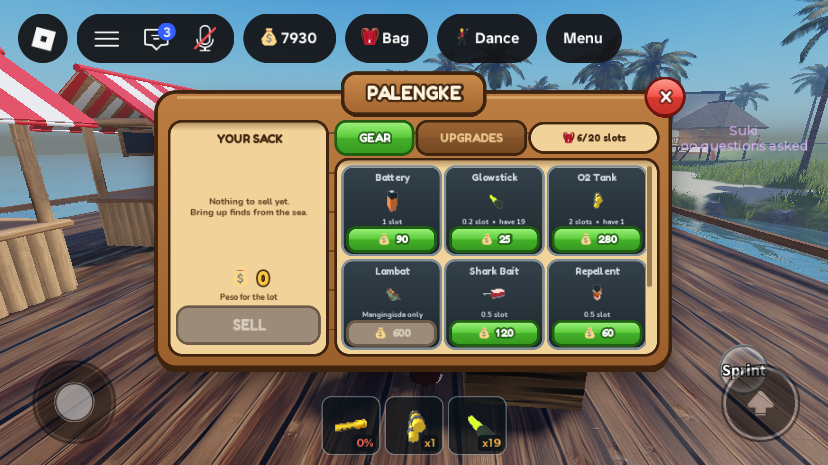

Phase 2: the Maninisid job, and gear that belongs to a job
Not live yet. Like Phase 1 and today's shark updates, this reaches players only when the place is published from Studio.
What was asked
- "Add another role which is a diver."
- "Hotbar item should only show to those having the role. Lambat can only be used by mangingisda; glowstick, oxygen, etc. for diver; mangingisda can also have some items diver have; police cannot have sea items because they don't need them on the job; nurse don't need to have any ... so player cannot just switch role."
- The owner accepted the plan's recommendations: no job makes a player a Tambay, the outlaw path, and only a Tambay carries the axe and the tolda. Players can't buy gear their job can't use. The Diver cap is 6, and divers get +10% on cave finds.
What changed
1. New job: Maninisid (Diver)

RoleService.Roles.maninisid: cap 6, any time of day, fee 100 like the other jobs (Phase 1). It has no NPC stand-in (noBot,botManaged, like the Pating), board order 5. The Pating moved to order 6.- It is the only job that carries Oxygen Tanks.
- Diver's rate: when a Maninisid sells at the Palengke,
InventoryServiceadds 10% (DIVER_RATE) of the sell price of every cave find. That is everything except Kabibe and Bahura (SHALLOW_FINDS). The sale message adds "(+N diver's rate)". - The board subtitle for someone with no job now reads "No job makes you a Tambay: you carry the axe and the tolda. Take a job, or hand one back."
2. Each job carries only its own gear
| Item | Tambay | Maninisid | Mangingisda | Pulis | Nars | Tindero | Pating |
|---|---|---|---|---|---|---|---|
| Flashlight, battery | ✓ | ✓ | ✓ | ✓ | – | – | – |
| Oxygen Tank | – | ✓ | – | – | – | – | – |
| Glowstick, Shark Bait, Shark Poison, Shark Repellent | – | ✓ | ✓ | – | – | – | – |
| Lambat | – | – | ✓ | – | – | – | – |
| Axe, Tolda | ✓ | – | – | – | – | – | – |
| Binoculars | – | – | – | ✓ | – | – | – |
| Finds (and anything not listed) | everyone | ||||||
- The rules live in the new
ItemConfig.RoleGear.ItemConfig.RoleNamesgives the job names, and there are new helpers:RoleOf(player)(no job = "tambay"),RoleAllows(key, role),CanCarry(player, key)andRolesLabel(key)(e.g. "Maninisid, Mangingisda"). The server and the screens read the same table. - Nothing is taken away. Gear a job can't use stays in the bag or bodega. It just doesn't reach the hotbar, and it comes back the moment the player takes a job that uses it.
- Hotbar (
InventoryService.syncTools): a tool is only made for gear the job allows. The exception is a pitched tolda, which keeps its tool so the stall can always be packed up.syncToolsalso manages the StarterPack Flashlight: a Nars, Tindero or Pating has it removed, including just after every respawn, and a job that carries one gets a fresh copy with itsFlashlightClientscript. A new listener on the player'sRoleattribute re-syncs the hotbar and repaints the bag and Palengke on every job change. - Refused on the server:
- buying at the Palengke (
RequestItemBuy); - using gear from the bag (
RequestItemUse, e.g. an oxygen tank); - laying a glowstick (
RequestItemDrop; other gear can still be dropped for a teammate); - buying a tolda from Suki ("You've got a job. Come back when you're a Tambay.");
- pitching a tolda;
- Shark Repellent going off from the bag (
SharkService.spendRepellent).
- buying at the Palengke (
- Palengke (
GearHud): a tile for another job's gear shows "Mangingisda only" and a greyed price (below). - Bag (
BagHud): another job's gear is dimmed. Selecting it shows "Maninisid, Mangingisda gear. Take that job to use it." and there is no USE button. DROP stays.

All changes
| Instance | Change |
|---|---|
ReplicatedStorage.ItemConfig | edit new RoleGear, RoleNames, RoleOf, RoleAllows, CanCarry, RolesLabel |
ServerScriptService.RoleService | edit new maninisid role; pating order 6 |
ServerScriptService.InventoryService | edit StarterPack reference; role gate and flashlight handling in syncTools; roleRefusal; checks in buy, use and glowstick drop; DIVER_RATE and SHALLOW_FINDS on selling; Role attribute listener |
ServerScriptService.BlackMarketService | edit Suki sells a tolda only to a Tambay; only a Tambay pitches |
ServerScriptService.SharkService | edit requires ItemConfig; repellent only works for a job that carries it |
StarterPlayer.StarterPlayerScripts.RoleHud | edit Tambay subtitle; six-jobs comment |
StarterPlayer.StarterPlayerScripts.GearHud | edit keeps each tile's button API; "X only" note and locked price for another job's gear |
StarterPlayer.StarterPlayerScripts.BagHud | edit dims another job's gear; info line; USE hidden |
No new instances, remotes or saved fields. Every script was compile-checked with loadstring before saving.
Testing
A solo playtest on MERS_Cov2, ended by kicking the player from the Server. The kick released the save lock (checked in the DataStore afterwards). No script errors. The first attempt could not load the account because another session (0e606b75, not a Studio playtest) was holding its save; I left that lock alone and started again once it was released.
- The table itself: printed
RoleAllowsfor every item and job in Edit, and it matches the table above. - Tambay on join: the hotbar held only the Flashlight. The Binoculars, which everyone used to carry, were gone.
- Tambay at the Palengke: buying a glowstick was refused: "Only a Maninisid or Mangingisda can buy glowstick..." (the wording has since been fixed to "a Glowstick").
- Maninisid: taking the job charged the 100 fee ("Paid the 100 Peso clearance. The only job that carries Oxygen Tanks..."). A glowstick (25) and an oxygen tank (280) then bought fine. With the bodega up, the hotbar showed Flashlight, OxygenTank and Glowstick.
- Handing the job back: the hotbar went back to just the Flashlight, and the bag still held oxygen 1 and glowstick 19. Laying a glowstick and using the tank were both refused.
- Nars (taken with the admin
/job me nurse): no tools at all. Handing it back returned a Flashlight with its script. A respawn as Nars showed the StarterPack Flashlight right after spawning and none 2 seconds later. - Board and Palengke: screenshots above. The six rows fit, and the Lambat tile reads "Mangingisda only" as a Maninisid.
- Selling as a Maninisid with only Kabibe in the sack: "Sold 2 finds for 20 Peso." No diver's rate, which is correct for shallow finds.
Gaps and things to check
- The +10% diver's rate on a cave find was not seen in play. A script couldn't trigger a cave pearl's pickup prompt (a shallow shell's worked), so this is checked by reading the code only. Sell a cave pearl as a Maninisid once to confirm.
- The axe for a Tambay was not seen on the hotbar. Players' axes start in the bodega, and it was not moved to the bag in the test. The rule is the same one the other items passed.
- Not tested: the Suki refusal and tolda pitch refusal (they need the fixer prompt), the Pulis's binoculars, and the repellent refusal (it needs an AI shark bite).
- A brief flash on respawn: a Nars, Tindero or Pating sees the StarterPack Flashlight on the hotbar for about half a second after respawning, until the sync removes it.
- Other hotbar-only messages were not reworded; for example, a player's own sale message still shows the amount before the VIP and fiesta multipliers, as it did before.
- The old welcome/tutorial panel still lists older activities; it is replaced in Phase 8.